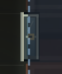
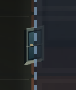
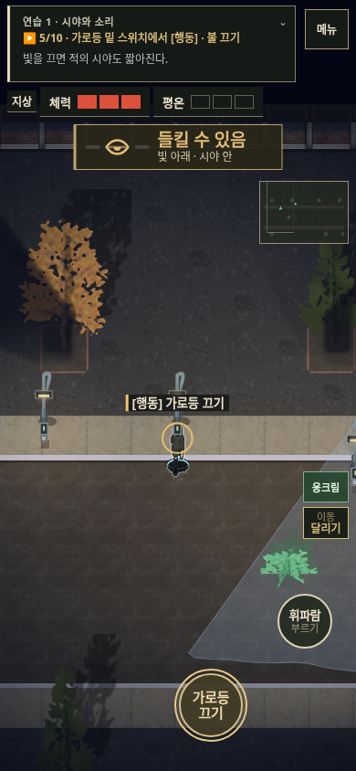
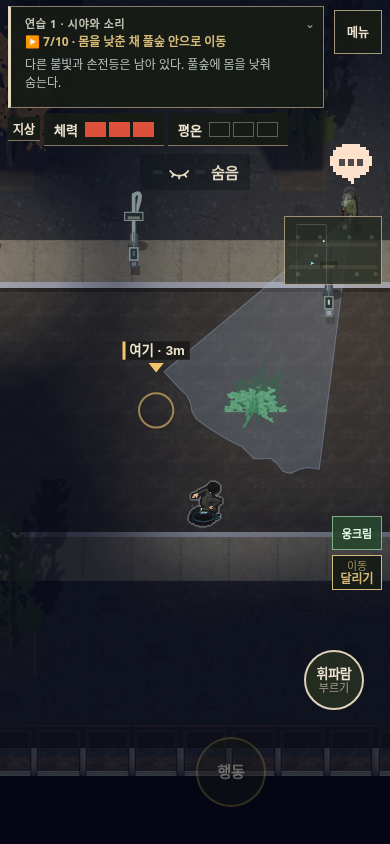
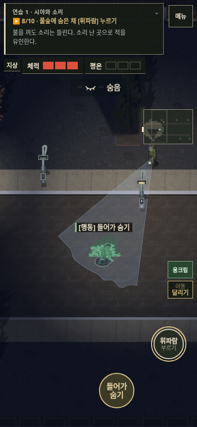
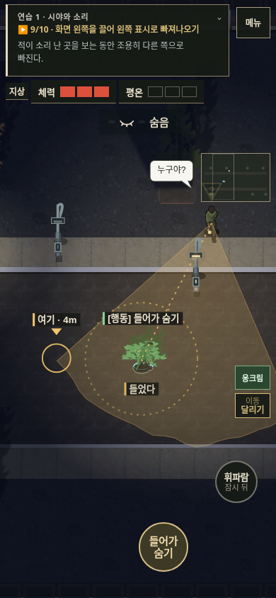

야행 v137 · 창문과 잠입 원리
2D 플레이 · 변경·검수 기록
측면 창문 전후
같은 서쪽 외벽을 촬영한 통제 배치다. 세로로 긴 틀과 큰 금색 손잡이를 줄이고, 창턱과 유리 두 칸으로 외벽 창문을 표현했다.

변경 전 · 확대
변경 후 · 확대조명을 끄고, 어두운 길을 지나고, 소리를 낸다
실제 터치 조작으로 진행한 연습이다. 불을 끈 뒤에도 남은 조명과 손전등을 피하며, 소리는 별도로 들린다는 순서로 배운다.

직접 스위치 조작
풀숲 밖의 어두운 길
다른 빛이 남은 구역의 풀숲 은신
보이지 않아도 소리는 들린다검수 결과
PC·터치 입력으로 두 연습과 첫 의뢰 진입까지 통과했다. 통제된 AI 배치에서 유인 확인자 1명·주변 경계 2명, 반복 소리 수색, 실제 스위치 접근과 복구를 확인했다. 실제 iPhone 성능이나 신규 사용자의 학습 성공률을 측정한 결과는 아니다.
Impeccable과 Ponytail REVIEW를 승인한 범위로 설치·사용했다. 모바일 이동 보조 글자는 검수에서 발견한 9px을 11px로 키웠다. 자동 훅은 추가하지 않았다.